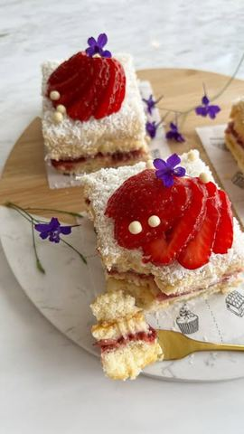

Sočni mlečni kolač sa jagodama

Moja beleška
SačuvanoSastojci
- Jagoda sloj
- Mlečni fil
Priprema
(390 gr) Prvo se pripremi jagoda preliv - kako bi se prohladio dok se priprema mlečni fil. Dobro oprane, očišćene i iseckane jagode posuti šećerima i linunovim sokom pa ostaviti da se krčka malo duže na tisoj vatri kako bi bio gustine kao sa snimka. U posebnu serpicu sipati obično i kondenzovano zasladjeno mleko, lepo promešati, dodati slatku pavlaku, burbon vanilu, pa sve ostale suve sastojke. Mešati dok se lepo ne zgusne, možda nekih 7,8 minuta na srednjoj temperaturi. Kako piškote nisam umakala dodatno, dno posude sam premazala tanjim slojem fila, pa sam poređala piškote - mlečni fil - jagoda sloj - piškote - mlečni fil i posula sam kokosom. Preko noći sam ostavila u frižideru kako bi piškote lepo upile i kako bi kolač mogao lagano da se iseče i posluži.
Originalni opis sa Instagrama
Sočni mlečni kolač sa jagodama 🍰🥛🍓 Kremkasto savršenstvo pripremano sa tri vrste mleka uz dodatak kokosa i jagoda, tako bogat ukus, a tako malo vremena i tako prosta priprema 😌😍 Mislim da će vas ovaj trio oduševiti 🥛🥥🍓 Jagoda sloj: •450 gr svežih jagoda •80 gr šećera •vanilin šećer •sok od limuna (dve kašike) Mlečni fil: •500 ml mleka •1 konzerva zaslađenog kondenzovanog mleka (390 gr) •200 gr mleka u prahu •50 gr šećera u prahu •100 gr kokosa •50 gr gustina •200 ml slatke pavlake •po želji dodati 1 kesicu burbon vanile •malo kokosa za posipanje •28 komada piškota (pleh dimenzija 23 x 23) Prvo se pripremi jagoda preliv - kako bi se prohladio dok se priprema mlečni fil. Dobro oprane, očišćene i iseckane jagode posuti šećerima i linunovim sokom pa ostaviti da se krčka malo duže na tisoj vatri kako bi bio gustine kao sa snimka. U posebnu serpicu sipati obično i kondenzovano zasladjeno mleko, lepo promešati, dodati slatku pavlaku, burbon vanilu, pa sve ostale suve sastojke. Mešati dok se lepo ne zgusne, možda nekih 7,8 minuta na srednjoj temperaturi. Kako piškote nisam umakala dodatno, dno posude sam premazala tanjim slojem fila, pa sam poređala piškote - mlečni fil - jagoda sloj - piškote - mlečni fil i posula sam kokosom. Preko noći sam ostavila u frižideru kako bi piškote lepo upile i kako bi kolač mogao lagano da se iseče i posluži. Iskoristite najsladje 🍓🍓 dok ih još ima, isprobajte ovu divotu a ja vas čekam sa utiscima 🥰 • • • #jagodakolac #socnikolac #kolaci #kolacsajagodama #dezert #idejezadezert #slatkisi #slatkirecepti #ukusnirecepti #mojirecepti #ukusnoibrzo #kokos #zadovoljnahr #zadovoljnars